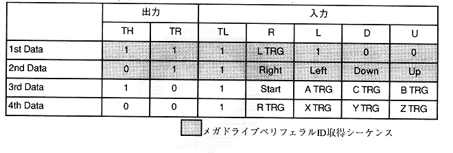

XD7 to XD0, YD7 to YD0 Absolute value of mouse movement 1 when the Start, Middle, Right, Left button is pressed.
Table 3.36 Saturn Standard PAD Data Format in SH-2 Direct Mode

* Right, Left, Down, Up, Start, A TRG, C TRG, B TRG, R TRG, X TRG, Y TRG, Z TRG, L TRG are 0 when the button is pressed.